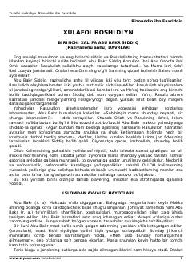

XRBuyuk xalifalar va xususan Abu Bakr Siddiqning hayoti va islomiy faoliyati haqida asar.
Mazkur kitobda to'rt buyuk xalifaning hayoti, islom dini ravnaqi yo'lidagi xizmatlari va ularning hayot yo'li haqida hikoya qilinadi. Xususan, birinchi xalifa Abu Bakr Siddiqning hayoti, islomga kirish tarixi va sahobaning fidoiyligi keng yoritilgan. Asar tarixiy manbalarga asoslangan bo'lib, o'quvchilarga islom tarixi bo'yicha chuqur bilim beradi.